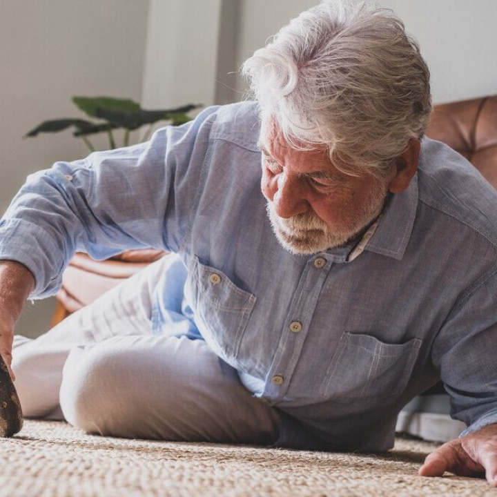
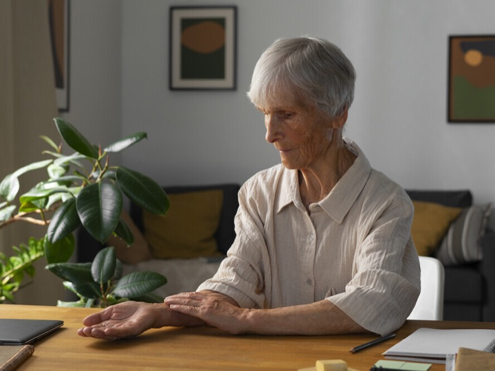
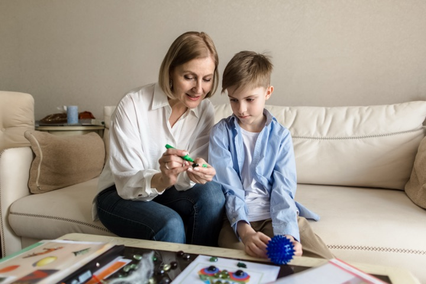

Авторские обзоры экспертов клуба: диагностика, лечение и практические рекомендации.
Аутоиммунные энцефалиты (АЭ) — гетерогенная группа иммуноопосредованных заболеваний ЦНС, обусловленных выработкой аутоантител к нейрональным поверхностным или синаптическим антигенам. В большинстве случаев при ранней диа

Читать/Скачать PDF Курушина О.В., Салихова С.Г., Вершинина Е.Е. Разработка и психометрическая валидизация Шкалы падений пожилых пациентов с…

Читать/Скачать PDF Захаров В.В., Насонова Т.И. Умеренные когнитивные нарушения и легкая деменция: дифференциальный диагноз. Поведенческая неврология.…
Читать/Скачать PDF Менделевич В.Д. Клинические варианты посттравматического стрессового расстройства после жизнеугрожающих событий: современная…
Читать/Скачать PDF Котова О.В., Акарачкова Е.С. Тревожные расстройства: с чем приходит пациент к врачу-интернисту? Поведенческая неврология. 2026; 1:…
Сон — активный нейробиологический процесс, критически важный для работы глимфатической системы, консолидации памяти, иммунной функции и…
Почему с возрастом растёт риск упасть? С годами в организме происходят закономерные изменения: снижается мышечная сила и масса (в медицине это…
В журнале Practical Radiation Oncology в апреле 2026 года опубликовано клиническое руководство Американского общества радиохирургии, посвящённое…

Читать/Скачать PDF Аннотация Цель исследования – подтверждение предположения о том, что высокий уровень серотонина в крови у детей с аутизмом связан…
Читать/Скачать PDF Для цитирования: Эволюция неинвазивного лечения СМА: достижения первого пятилетия и новые горизонты. Русский журнал…